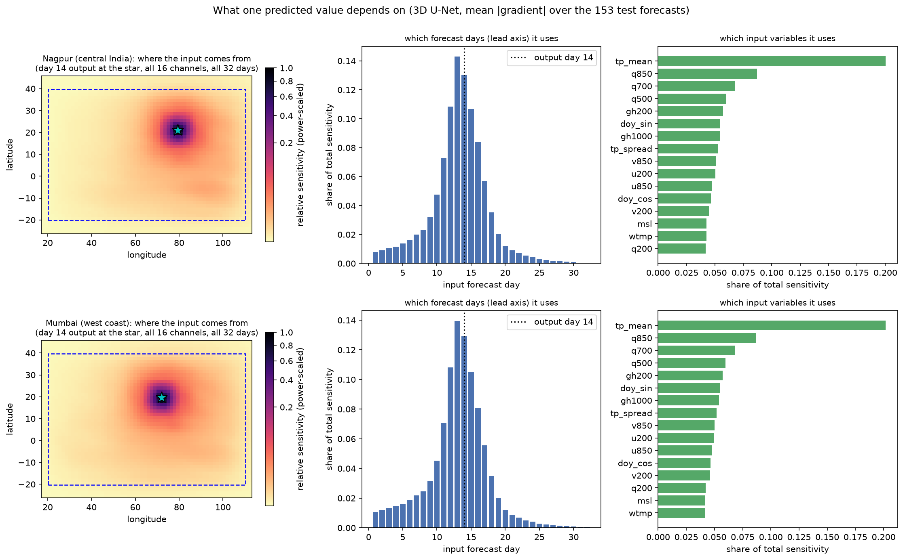
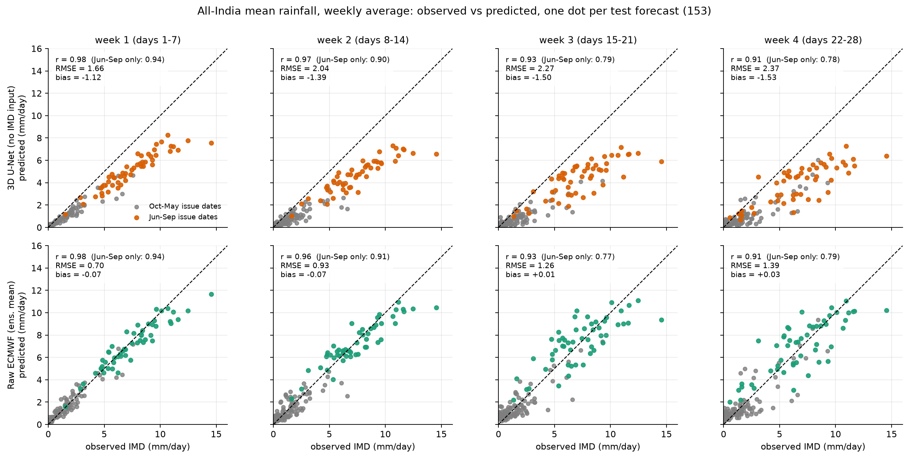
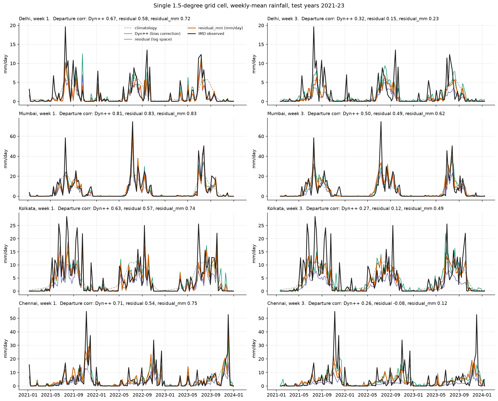
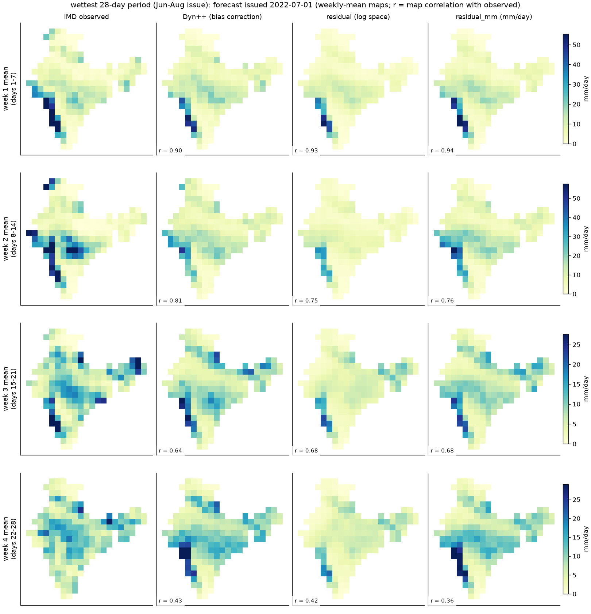

What we are doing
ECMWF publishes a rainfall forecast for the next 32 days. Beyond the first week it is not very accurate. We train a neural network to turn ECMWF's forecast into a corrected forecast, and check it against rain observed by the India Meteorological Department (IMD).
The network is a 3D U-Net ported from a published model for the western US (Ryu et al. 2026; their code). Findings from Experiments 1–8:
- On daily rainfall maps the model beats raw and debiased ECMWF at every forecast day.
- The standard score overstates skill: predicting the long-term average beats raw ECMWF on it, so we also score with the average removed.
- Predicting the departure from normal gives a real gain on daily maps (+0.026, 3 runs each), but not on weekly totals.
- The model's maps are too flat (about a third of the real variability) and about 1.5 mm/day too dry.
- None of the extra inputs tested helps: the 12 atmospheric fields, yesterday's observed rain, the day of year.
Newest result, on page 2. A simple bias correction (Dyn++) beats every model on this page on weekly totals. A U-Net that corrects Dyn++ and is trained on real rain amounts (
residual_mm) beats Dyn++ in every week, and is now our best model.
Go to page 2 →
All numbers are on correctly aligned days
IMD labels each day's rain by the morning its 24-hour window ends (08:30 IST). ECMWF's first forecast day therefore matches IMD's next day, not the issue day. Our first scores compared each ECMWF day with the IMD day before it. We fixed this and rescored every saved run: forecast day d is now compared with IMD date issue + d, over 31 scoreable days.
Every conclusion survived except one: the small gain from yesterday's observed rain (Experiment 6) disappeared. The numbers below are the aligned ones.
Inputs and outputs
Each example is one ECMWF forecast, identified by its issue date. The model sees ECMWF's forecast for the next 32 days and outputs corrected daily rainfall for the same days.
The headline model uses 16 inputs: 14 ECMWF fields and 2 calendar channels. Observed rain would not be available at forecast time, so IMD is used only as the training target and for scoring.
The model
"3D" means forecast day × latitude × longitude: one network sees all 32 days at once. It shrinks the data three times to find large-scale patterns, then expands it back, with skip connections carrying fine detail across.
"ch" is the number of channels; the three numbers are forecast days × rows × columns. Original diagram: Figure 1 of the reference paper.
- Loss: squared error + (1 − pattern correlation), on log(1 + rain), Indian land cells only.
- Training stops when the validation score has not improved for 10 epochs; inputs are rescaled with training years only.
- 22.4 million parameters and 724 training examples, so it overfits early: the best epoch is usually 4–7.
How we score it
Climatology removed. Much of an Indian rainfall map is predictable from the calendar alone (the west coast is wet every July). So we also score after subtracting the long-term average for that date and place from both prediction and truth. The average always uses earlier years only.
Experiment 1
More training data
Pattern correlation at forecast day 1, models trained on 60, 250 and 724 forecasts.
More data helps at every step. The 724-forecast model is the Baseline from here on. (Scored before the date fix; the 60 and 250 runs used a smaller 78-forecast test set, so they were not rescored.)
Experiment 2
Honest scoring
Two reference forecasts: climatology (always predict the long-term average, so no forecasting at all) and debiased ECMWF (ECMWF with its usual bias for each date and forecast day removed).
Climatology beats raw ECMWF on the standard score. That score partly rewards knowing the season. With climatology removed, the Baseline's real skill on daily maps is 0.325, still clearly above every reference.
Pattern correlation with climatology removed, by forecast day. Hover for values.
Experiment 3
Predicting the departure from normal
Instead of drawing the whole rainfall map, the model predicts how far rain will depart from normal for that date and place; the normal is then added back. Rain is handled as log(1 + rain).
target = (obs − normal) / σ_obs how unusual the real rain was
ECMWF input = (ecmwf − ecmwf_usual) / σ_ecmwf how unusual ECMWF says it will be
prediction = exp(normal + σ_obs × output) − 1 normals: earlier years only
A real gain on daily maps: every departure run beats every Baseline run, and the gain grows with lead. But not on weekly totals: scored as in Experiment 9, it ties the Baseline in weeks 1–2 and is worse in weeks 3–4 (−0.03 to −0.04). A "trust gate" variant added nothing (+0.001).
Experiment 4
The paper's metric, and flat maps
The predicted maps are too flat. They carry about a third of the real variability. (An earlier version averaged the SD ratio over forecasts and reported about half; a few near-dry days with ratios above 200 inflated that average, so the median is used.) We also fixed a bug in our Epre port, which gave 1.386 for a perfect forecast.
Experiment 5
Which inputs matter
Input groups added one at a time, same seed, all 724 training forecasts.
All four are the same within retraining noise: the 12 atmospheric inputs add nothing measurable, as in the paper. (On weekly totals the "+ winds" run scores best of Experiments 1–7, but it is a single run.)
Experiment 6
Does yesterday's observed rain help?
The only real observation among the inputs. We trained the 17-input setup with and without it, 3 seeds each.
No measurable effect. A first single-run version suggested a small gain at long lead; with 3 seeds and aligned days it reverses and stays inside seed noise. Dropping it gives the 16-input headline model.
Experiment 7
Does the day-of-year input help?
The calendar adds nothing: the −0.007 is smaller than the spread between seeds of one setup (up to 0.017). ECMWF's fields already carry the season.
How much to trust single runs
A difference counts only if it is larger than both the bootstrap range (which test forecasts were drawn) and this seed spread (training randomness).
Experiment 8 · review response
Professor's comments
All figures use the 16-input model (no observed rain as input), on aligned days. Click a heading to open an image; click an image to open it full size.
Which inputs feed one predicted value?
The whole input block can, but most influence is local: gradients of the day-14 output at Nagpur and Mumbai show 67–68% of it within ±6° and about 70% from forecast days 11–17. ECMWF rain carries 20%; each other channel 4–9%.
Input sensitivity where, when and which variable

Left: where the input comes from (star = output cell). Middle: which forecast days. Right: which variables.
Learning curves
After about epoch 7 training loss keeps falling (0.95 → 0.60) while validation rises: the model overfits. At the chosen epoch: train 0.946, validation 0.961, test 0.979.
Learning curves train, validation, test
Observed vs predicted
Two weaknesses. Both models squash heavy rain (40+ mm/day is predicted at about 10–18), and the U-Net is 1.3–1.7 mm/day too dry while raw ECMWF is nearly unbiased. Page 2 traces the dryness to training in log(1 + rain) and fixes it.
Grid-cell scatter, mm/day days 7/14/21/28, U-Net above ECMWF
Grid-cell scatter, log scale same data, log(1 + rain) axes
All-India weekly mean scatter one dot per test forecast

The weekly correlations look very high (0.91–0.98) mostly because of the seasonal cycle; climatology alone scores 0.90.
Time series and test cases
Cases were chosen by a rule (wettest, driest and median Jun–Aug period, plus the wettest Mar–May, Oct–Dec and Dec–Feb), not by how good they look.
All-India weekly series weeks 1–4, 2021–2023
City time series Delhi, Mumbai, Kolkata, Chennai; weeks 1 and 3
Case time series all-India mean over the forecast days
Case maps six test forecasts, weekly and daily
Columns: IMD observed, raw ECMWF, U-Net, U-Net minus observed. First image of each case: weekly means; second: single days 7, 14, 21, 28.
Wettest Jun–Aug, issued 2022-07-01
Driest Jun–Aug, issued 2023-08-05
Median Jun–Aug, issued 2021-08-26
Wettest Mar–May, issued 2021-05-27
Wettest Oct–Dec, issued 2022-10-07
Wettest Dec–Feb, issued 2021-12-27
Summary of Experiments 1–8
- On daily maps the model beats raw and debiased ECMWF at every forecast day: real skill 0.325 with climatology removed (0.66 at day 1, 0.15 at day 28).
- The standard score overstates skill, because climatology alone beats raw ECMWF on it.
- Predicting the departure from normal helps daily maps (+0.026, 3 seeds), not weekly totals.
- Predictions are too flat (a third of the real variability) and 1.3–1.7 mm/day too dry, and the India-wide weekly amount is worse than raw ECMWF's.
- No extra input helps: atmospheric fields, yesterday's observed rain and the day of year are all within noise.
Point 4 is what page 2 sets out to fix. Continue to page 2 →
Issues found along the way
Latest result · Experiments 9–12
A U-Net on top of bias correction is our best forecast
Page 1 ended with a problem: our U-Net was too dry and lost the India-wide rainfall signal. Here we (1) score forecasts the standard way for 2–4 weeks ahead, on weekly rain totals; (2) build the simple method everyone should beat, bias correction; (3) let a U-Net improve on that. The result, residual_mm, is better than every earlier forecast.
Weekly correlation, week 30.404bias correction 0.330 · old U-Net 0.224
Gain over bias correction+0.05 to +0.07in every week 1–4, 3 training runs
Average dryness−0.37mm/day; old U-Net −1.55
Where we were
- The U-Net looked good on daily maps scored on log(1 + rain): it got the wet/dry pattern of single days right.
- But 2–4 week forecasts are normally judged on weekly totals in mm, where getting the amount right matters. There the U-Net was 1.5 mm/day too dry, and its India-wide weekly signal was far worse than raw ECMWF's (0.22 vs 0.56 at week 3).
- So we needed a fair, simple reference to compare against, and a model that gets amounts right.
Experiment 9
Plain bias correction (Dyn++)
The idea in one sentence: ECMWF is systematically too wet in some places and seasons and too dry in others, so measure by how much in past years and scale its forecast by that amount.
- For each grid cell, each calendar month and each forecast week (1–4), add up ECMWF's weekly rain and IMD's observed weekly rain over the training years 2004–2017.
- The correction factor is their ratio:
(observed + 1) / (ECMWF + 1), capped between ×0.25 and ×4. The "+1" stops dry cells dividing by zero.
- A new forecast is multiplied by its factor. No neural network: the whole method is a table of 12 × 4 × 187 numbers.
Example. Suppose in July, week 3, ECMWF forecast 50 mm per week for a Mumbai cell on average while IMD observed 80 mm. The factor is 81 / 51 ≈ 1.6, so a new July week-3 forecast of 40 mm becomes about 64 mm.
The method follows Dyn++ from the ABC paper (Mouatadid et al. 2023), simplified. Training years use factors fitted with that year left out, so no forecast is corrected with its own answer. Experiment 11 tightens this to past years only; Experiment 12 checks the ±1-month window behind the table.
Bias correction beats raw ECMWF by about +0.11 in every week, and beats every U-Net from page 1. It also keeps ECMWF's India-wide signal (0.59 at week 3, against the old U-Net's 0.20) and has almost no bias.
Why the old U-Net lost: it learned on a log scale. On log(1 + rain), predicting 20 mm instead of 40 mm costs about as much as predicting 1 mm instead of 2. Most grid-days are dry or light, so the network is rewarded for light-rain detail and barely penalised for missing heavy rain. Converting a log-scale best guess back to mm also lands below the true average. The result is a forecast that is right about where it rains and wrong about how much.
Experiment 10
A U-Net that corrects the bias correction
Instead of building a forecast from scratch, the U-Net now starts from Dyn++ and learns only a correction. Its correction starts at exactly zero, so before training the model is Dyn++; it can only learn changes that improve on it. Same 16 inputs, with ECMWF rain replaced by Dyn++ rain.
We tried three versions:
residual vs residual_mm. Both start from the same unbiased Dyn++. residual trains on the log scale, so training drags it back to the old dryness. residual_mm measures its error in mm/day, so missing a heavy-rain week costs what it should, and it keeps Dyn++'s correct amounts. Its pattern score also uses only the departure from normal, so it gets no credit for geography (the west coast is always wetter) and has to learn real anomalies.
Results: residual_mm is the best forecast in every week
Weekly correlation per grid cell (7-day totals, normal removed), 153 test forecasts. residual_mm and the old U-Net: mean of 3 seeds; residual: 1 seed. Hover for values.
- Beats Dyn++ per grid cell in every week: +0.063, +0.046, +0.074, +0.060. Every 95% range excludes zero (week 1: +0.044 to +0.082), and it is 1–2 mm/week more accurate.
- Ties Dyn++ on the India-wide signal: differences −0.009 to +0.034, all inside the noise. It keeps what the old U-Net lost.
- Training in mm is the key:
residual starts from the same Dyn++ but trains on the log scale, and ends up below Dyn++ and as dry as the old model.
How sure are we?
- Three training runs agree:
residual_mm's seeds differ by at most 0.02 in weekly correlation, much less than its +0.05 to +0.07 gain.
- The gain survives resampling the test forecasts (paired bootstrap): every weekly 95% range excludes zero.
- No future data: with bias-correction factors for training years fitted on earlier years only, the result is unchanged (Experiment 11, below).
- Limits: only 3 test years (2021–2023);
plain_aligned and residual were run once each (their gaps to Dyn++ are far larger than seed noise); residual_mm got its extra runs after its first run looked best, and runs 2 and 3 reproduced it.
Experiment 11
Does the result rely on future years? No
In Experiment 10, the U-Net's training forecasts were corrected with Dyn++ factors fitted on every training year except their own. A July 2010 forecast was corrected using IMD rain from 2004–2009 and 2011–2017, partly from its future. Here we refit those factors on earlier years only and retrain residual_mm.
The scores are the same within noise. The past-only model is 0.005–0.014 lower in correlation and 0.1–0.4 mm/week higher in RMSE, about the difference between two training runs of the same model. It still beats Dyn++ in every week. The Experiment 10 result does not depend on future data, and this past-only model is our final version. Its predicted-vs-observed figures follow.
Experiment 11 · final model
Predicted vs observed, final model
Time series of observed rain (black) against Dyn++ (green), residual (purple) and residual_mm (orange: the final version, trained with past-years-only factors), seed 0 of each U-Net, test years 2021–2023. The purple line sits well below the observed line through every monsoon; the orange line tracks it.
All-India weekly series weeks 1–4, 2021–2023
City time series Delhi, Mumbai, Kolkata, Chennai; weeks 1 and 3

Single 1.5° cells are noisy. residual_mm has the best departure correlation in 6 of the 8 panels (e.g. Kolkata week 3: 0.49 vs 0.27 for Dyn++); Dyn++ is slightly better for Delhi and Chennai at week 3.
Case time series daily all-India rain, the six test cases from page 1
Case maps wettest Jun–Aug period, issued 2022-07-01

One forecast only, so map correlations are close between methods (0.36–0.94). residual's maps are visibly paler (too dry); residual_mm keeps the heavy rain on the west coast and in central India. The skill numbers above, over all 153 forecasts, are the fair comparison.
Experiment 12 · no training
Does ECMWF's error follow the season?
Dyn++ corrects a July forecast using June, July and August forecasts from past years (a ±1-month window), which triples the data. That only works if ECMWF's error in July resembles its error in June and August. We checked on 2004–2017.
- The error has a seasonal cycle. Over India, ECMWF is too dry before the monsoon (Feb–Apr, needs up to ×1.3), about right on average during it (Jun–Sep, ×0.9–1.0) and too wet after it (Oct–Dec, ×0.5–0.7).
- It is a pattern, not noise. We fitted correction maps separately on even and odd years (no shared forecasts). The same month in the two halves correlates 0.68–0.75; one month apart 0.53–0.59; two months 0.34–0.43; six months 0.12–0.17. Similarity fades steadily with distance, as a seasonal pattern would.
- ±1 month is a good window. On the validation years it ties a same-month-only window; ±2, ±3 months and a single all-year factor are steadily worse (week 1: 0.648, 0.636, 0.627, 0.619).
ECMWF's error by month, and how alike nearby months are 2004–2017
References
- Ryu, Kim, Wang & Yoon (2026), Increasing resolution and accuracy in sub-seasonal forecasting through 3D U-Net: the western US, Geoscientific Model Development 19, 27–39. Code: github.com/W-US-BCSR/IRnAF.
- Mouatadid et al. (2023), Adaptive bias correction for improved subseasonal forecasting, Nature Communications 14, 3482 (ABC; source of Dyn++).
- Forecasts: ECMWF S2S reforecasts, 11 ensemble runs, issued weekly 2004–2023.
- Observations: IMD Pune gridded daily rainfall, 1951–2025.
- Indian monsoon U-Net: Climate Dynamics (2026).